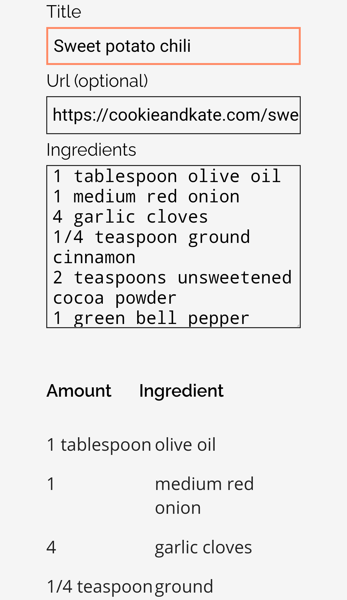
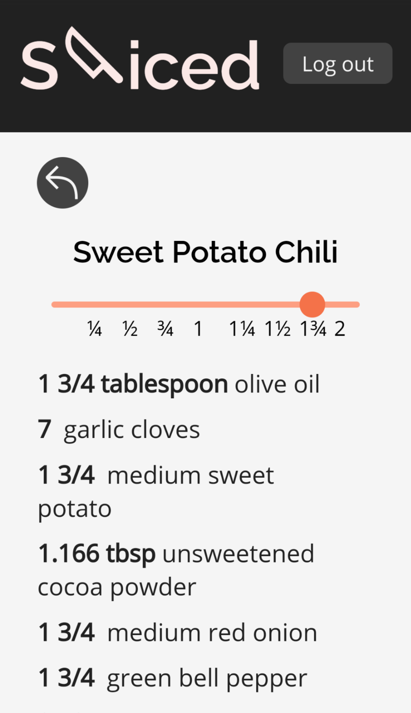
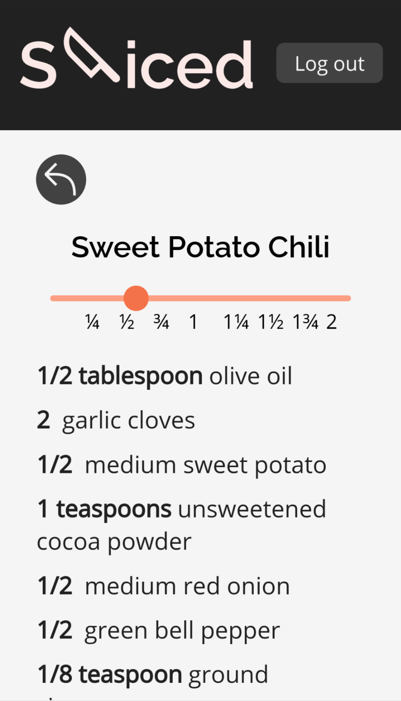
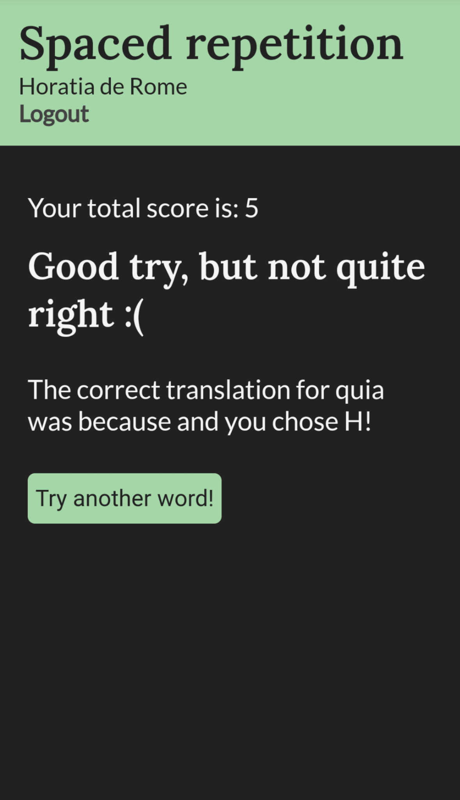
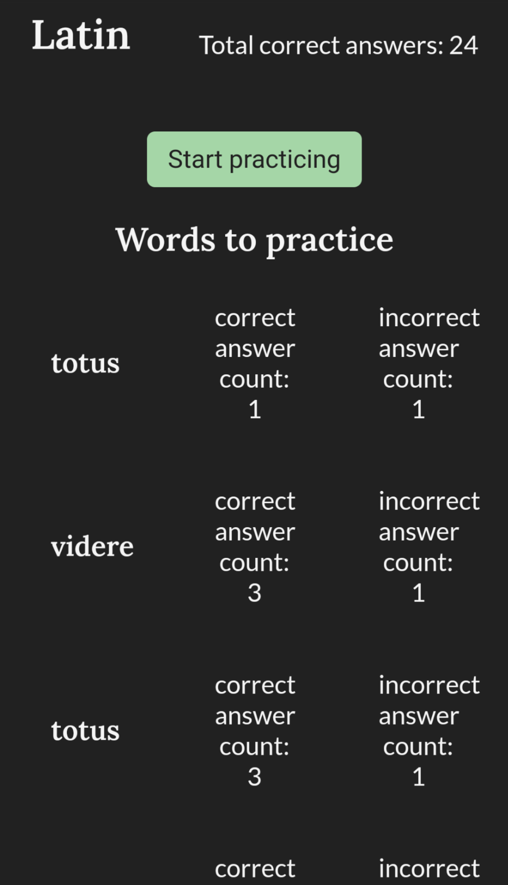
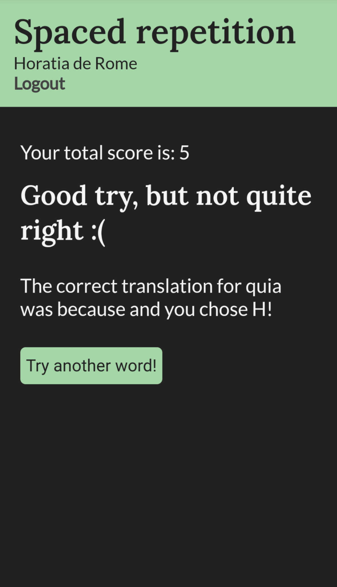
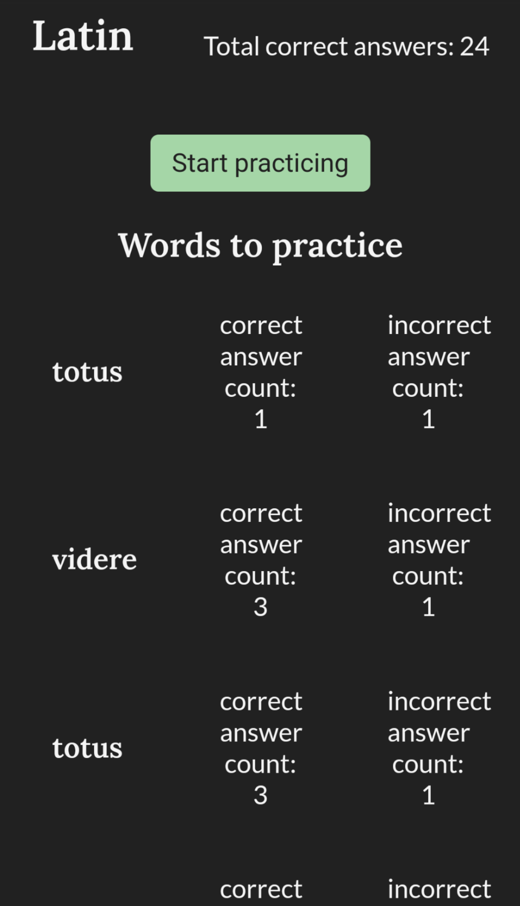

Sliced
Sliced is an app that stores and scales recipes. This app is for people who are tired of saying, Hey Siri, what is half of 1/3 cups in tablespoons? When a user creates a recipe on Sliced, the text is parsed to separate the amount and measurement unit from the ingredient's name. Users can use the slider at the top of the recipe page to scale all the ingredients up and down between 1/4 and 2 by increments of 1/4. Amounts divisible by 1/8 and 1/3 are converted into fractions, and other amounts are rounded to the third decimal place. Sliced was created as my first capstone project at Thinkful's Engineering Immersion program.



 


